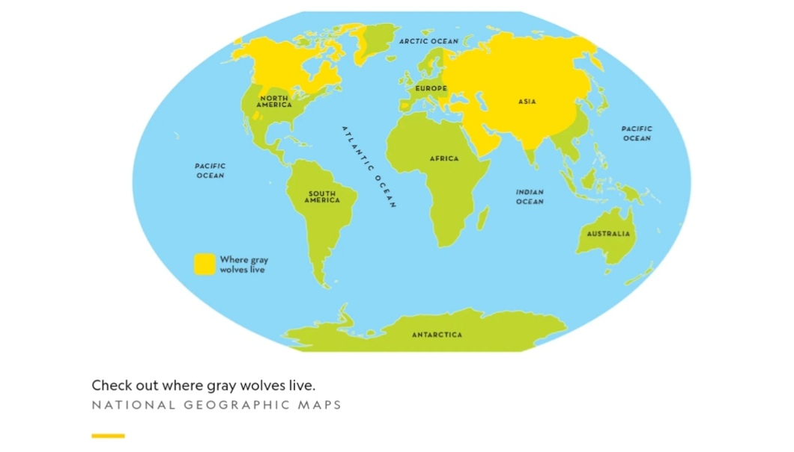

Gray wolves are members of the canine family, which also includes dogs, foxes, jackals, and coyotes

Wolves work together to hunt, raise their young, and protect their territory. Wolves communicate with more than howls. They whimper and whine, growl and bark, yelp and snarl. They also use scents produced by their bodies to communicate. A wolf’s sense of smell is 100 times stronger than a human’s. One source of scent is urine, which they use to mark territory and to tell other wolves in their own pack where they are. Another way wolves communicate is through body language. If a wolf feels confident, it will approach another wolf with its head and tail held high and ears perked up. If you saw a wolf slinking toward another with its body lowered, its tail between its legs, and its ears flattened, you'd know it was approaching a dominant animal.
When a pack of wolves does howl, it can be heard from ten miles away. The howl is used as a way to call to another pack or warn of danger. Each pack has a unique howl, and while they don’t howl at the moon, wolves howl more when the moon is full and bright. When a wolf wants to play, it prances about happily and bows—lowering the front of its body while its rump stays up in the air with its tail wagging. When its angry, a wolf may furrow its forehead, show its fangs, or growl. A wolf's body language may remind you of another animal: a pet dog. Wolves and dogs are closely related, and the ways they communicate are similar.
Young wolves stay in their parents' pack for at least two years before some of them take off to join other packs or to start their own. They may stay close to their parents or go far away. Wolf pups play a lot as they're growing. They leap and pounce, chase and wrestle, play hide-and-seek and tag—a lot like you do!